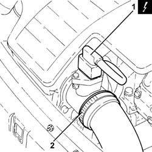
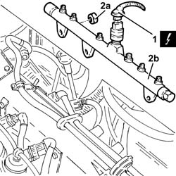
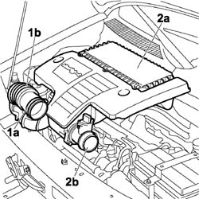
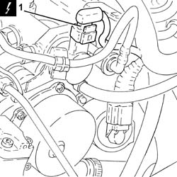
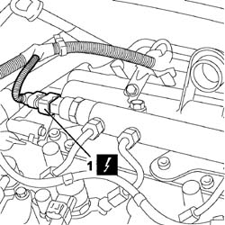
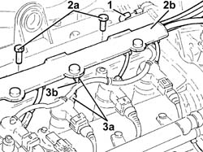
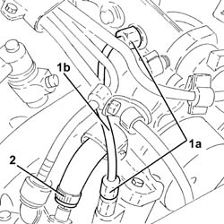
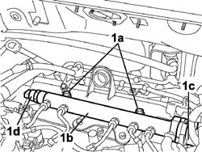
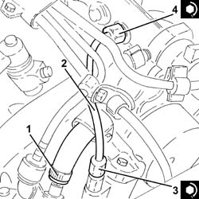
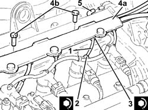

1060F30 fuel delivery manifold - r r
- Path
- Procedures > 10 ENGINE > 1060 DIESEL FUEL INJECTION > 1060F injectors and lines > 1060F30 fuel delivery manifold - r r
- Kind
- repair procedure (removal / refitting; the operation number is the code)
- Applies to
- all engines; all production periods
- Interactive page
- https://sloeber94.github.io/elrnDB-fDbl/en/#/2584407
Applies to: all engines; all production periods
 Removing
Removing
 Refitting
RefittingEnsure that the ignition key is in the OFF position, then disconnect the negative battery terminal.
 | Name | Connector |
|---|---|---|
- | Battery | A1 |
1. Disconnect the electrical connection from the air flow meter.
| Name | Connector |
|---|---|---|
1 | Air flow meter | K41 |
2. Loosen the band and disconnect the the turbocharger air inlet sleeve from the rigid pipe, air flow meter side.

Applies to: all engines; all production periods
Removing
RefittingProceed with the removal 1044B10 fuel filter assembly - r + r or replace .
Proceed with the removal 1080C24 e.g.r. system solenoid - r + r .
Proceed with the removal 1060F50 fuel return manifold - r r .
Proceed with the removal 1060G70 vacum tank for controlling engine air intake r r .
Proceed with the removal 1060F36 lines to injectors - r r .
Proceed with the removal 1060F20 pressure pump/manifold pipe - r r .
Undo the nuts and move the vacuum tank bracket.
1. Disconnect the electrical connection from the fuel pressure sensor.
| Name | Connector |
|---|---|---|
1 | Fuel pressure sensor | K83 |
2. Undo the nuts (2a) and remove the single fuel manifold pipe (2b) with.

Applies to: all engines; all production periods
1. Loosen the band (1a) and disconnect the flexible hose (1b) from the air intake.
2. Remove the air filter (2a) complete with air flow meter (2b) by releasing from the underlying pins and then from the rear fastening.

Applies to: all engines; all production periods
Refitting
RemovingPlace the exhaust manifold, complete with fuel pressure sensor, back in its housing and secure by tightening the nuts to the recommended torque.
 | Fastening | Component | Ø | Value (daNm) |
|---|---|---|---|---|
- | Nut | INJECTOR FUEL MANIFOLD (DIESEL) | M8 | 2.3 ÷ 2.8 |
Connect the electrical connection to the fuel pressure sensor.
Place the mounting bracket for the vacuum reservoir back in its housing and secure it with the nuts.
Proceed with the refitting 1060F20 pressure pump/manifold pipe - r r .
Proceed with the refitting 1060F36 lines to injectors - r r .
Proceed with the refitting 1060G70 vacum tank for controlling engine air intake r r .
Proceed with the refitting 1060F50 fuel return manifold - r r .
Proceed with the refitting 1080C24 e.g.r. system solenoid - r + r .
Proceed with the refitting 1044B10 fuel filter assembly - r + r or replace .
Applies to: all engines; all production periods
1. Disconnect the electrical connection from the fuel pressure regulator.
| Name | Connector |
|---|---|---|
1 | Fuel pressure regulator | N77 |

Applies to: all engines; all production periods
1. Disconnect the electrical connection from the fuel pressure sensor.
| Name | Connector |
|---|---|---|
1 | Fuel pressure sensor | K83 |

Applies to: all engines; all production periods
1. Disconnect the pipe from the fuel injectors to the fuel manifold, single fuel manifold pipe side.
2. Undo the bolts (2a) and move aside the pipe carrier channel (2b) as far as necessary.
3. Undo the connectors (3a) and remove the pipes from the fuel manifold to the fuel injectors (3b).

Applies to: all engines; all production periods
1. Undo the connectors (1a) and remove the pipe from the pressure pump to the fuel manifold (1b).
2. Loosen the band and disconnect the fuel return pipe from the pressure pump, pressure pump side.

Applies to: all engines; all production periods
1. Undo the bolts (1a) and remove the single fuel manifold pipe (1b) complete with fuel pressure regulator (1c) and fuel pressure sensor (1d).

Applies to: all engines; all production periods
Refitting
RemovingRefit in its seating the single fuel manifold pipe complete with fuel pressure regulator and fuel pressure sensor, then tighten it with its bolts.
1. Connect the fuel return pipe from the pressure pump, pressure pump side, and tighten the band.
2. Place the pipe from the pressure pump to the single fuel manifold back in its housing and fix it using the connectors without tightening them.
3. Tighten the connector for the pipe from the pressure pump to the single fuel manifold, pump side, to the recommended torque using a suitable spanner.
| Fastening | Component | Ø | Value (daNm) |
|---|---|---|---|---|
3 | Connector | PRESSURE PUMP LINE TO FUEL MANIFOLD | M12 | (Pressure pump side) 2.3 ÷ 2.5 |
4. Tighten the connector for the pipe from the pressure pump to the single fuel manifold, fuel manifold side, to the recommended torque using a suitable spanner.
| Fastening | Component | Ø | Value (daNm) |
|---|---|---|---|---|
4 | Connector | PRESSURE PUMP LINE TO FUEL MANIFOLD | M14 | (Fuel manifold side) 2.7 ÷ 2.9 |

Applies to: all engines; all production periods
1. Fit the new pipes from the fuel manifold to the injectors and secure them using the connectors without tightening them.
2. Tighten the connectors for the pipes from the fuel manifold to the injectors, injector side, to the recommended torque using a suitable spanner.
| Fastening | Component | Ø | Value (daNm) |
|---|---|---|---|---|
2 | Connector | FUEL MANIFOLD LINE TO INJECTORS | M12 | (Injector side) 2.3 ÷ 2.5 |
3. Tighten the connectors for the pipes between the fuel manifold and the injectors, fuel manifold side, to the recommended torque using a suitable spanner.
| Fastening | Component | Ø | Value (daNm) |
|---|---|---|---|---|
3 | Connector | FUEL MANIFOLD LINE TO INJECTORS | M14 | (Fuel manifold side) 2.7 ÷ 2.9 |
4. Refit in its seating the pipe carrier channel (4a) and secure it with its bolts (4b).
5. Connect the pipe from the fuel injectors to the fuel manifold, single fuel manifold pipe side.

Applies to: all engines; all production periods
Connect the electrical connection to the fuel pressure sensor.
| Name | Connector |
|---|---|---|
- | Fuel pressure sensor | K83 |
Connect the electrical connection to the fuel pressure regulator.
| Name | Connector |
|---|---|---|
- | Fuel pressure regulator | N77 |
Refit the air filter complete with air flow meter, engaging it in the rear attachment and then in the underlying pins.
Connect the flexible hose to the air intake on the crossmember and tighten the fixing band.
Connect the air intake sleeve to the turbocharger, air flow meter side, and tighten the band.
Connect the electrical connection to the air flow meter.
| Name | Connector |
|---|---|---|
- | Air flow meter | K41 |
Connect the battery negative terminal.
| Name | Connector |
|---|---|---|
- | Battery | A1 |